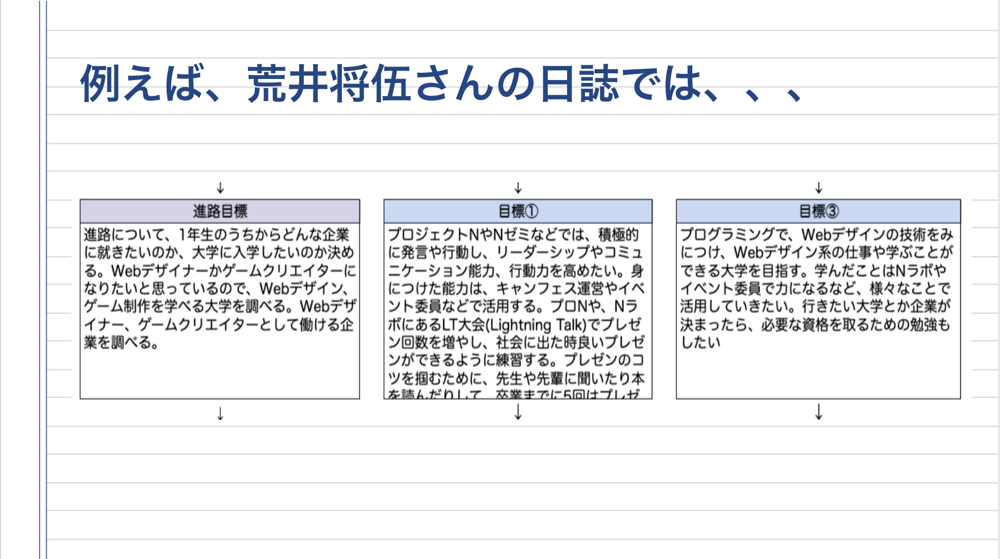
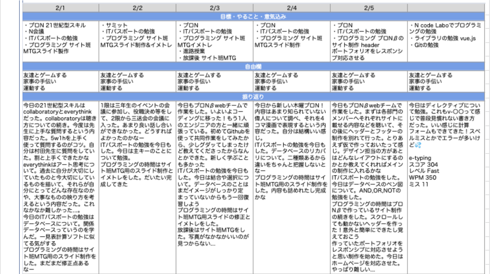
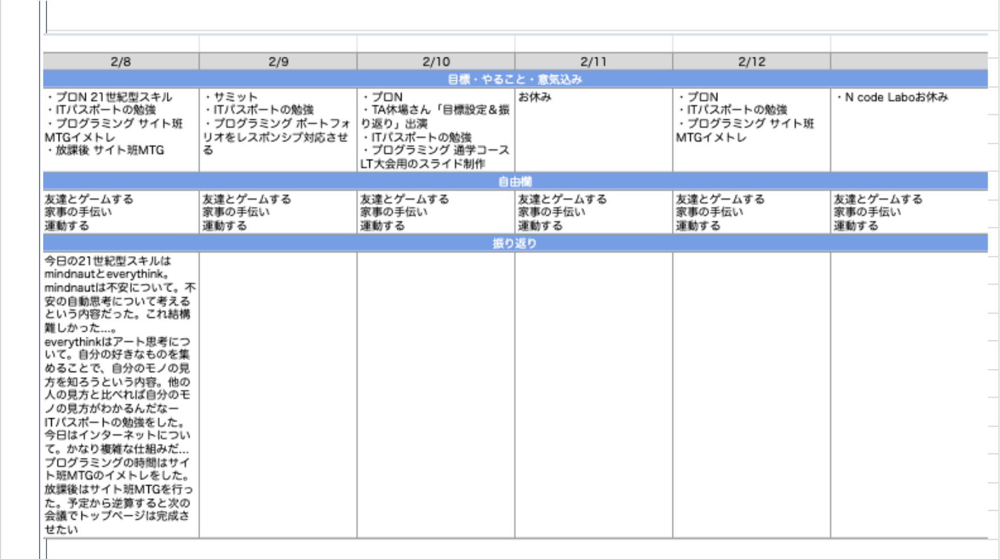

- AL合格 -
2/10に行われた、TA休場さん主催の特別講演
"目標設定&振り返り"にゲストとして出演させてもらいました
オンラインで行われましたが、その日出席した生徒のうちの半数以上の人たちが講演をみていました
最初は目標設定や日誌を書くことの大切さをTAさんが話し
そのあとに目標の立て方や日誌の書き方の例として自分のpjsを生徒たちに見せました

最後にアドバイス！
自分がいつもやっている目標の立て方や日誌の書き方のコツを紹介しました


特別講演に出演させてもらったのはもちろん初めてで、とっても良い経験になりました！
�少しずつですが、人前で話すことに抵抗を感じなくなってきました
今回は自分以外にももう2人ゲストとして出演していて
その2人のpjsも参考になりました！